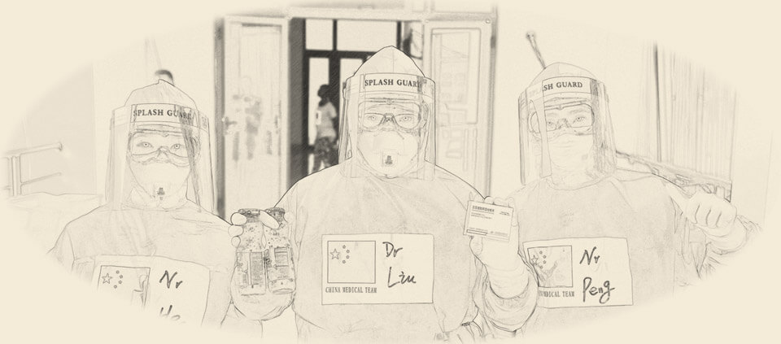

《奋进中国》
1921-2021百年沧桑，时代巨变。这一百年来，发生了太多改变。从积贫积弱到国富民强，从备受欺凌到屹立东方，从站起来、富起来到强起来……百年恰是风华正茂，未来仍需风雨兼程。我们始终不变的是，毅然逆行的勇气、众志成城的团结、矢志不渝的信仰。奋斗的人民，奋进的中国！
大国担当
征战埃博拉
2014年西非爆发40年来规模最大的埃博拉疫情,一条条鲜活的生命惨遭吞噬，危急时刻，中国伸出援助之手，组建援非抗击埃博拉医疗队，以实际行动展示了我国的国际责任和大国担当。由王锦秋、洪建国合著的39万字长篇报告文学《大国担当》这部援塞队员“冒着生命危险抢救出来的文字”，忠实反映了援塞医疗队直面生死、忘我工作，始终坚持零距离观察治疗、“不畏艰苦、甘于奉献、救死扶伤、大爱无疆”的精神，向世界展示了中国和中国军队的良好形象，展示了中国速度、中国标准、中国技术和中国精神。
首批援塞医疗队队员秦玉玲，接到出征命令后将生病的母亲托付给姐姐照看，第三天就到达非洲抗埃战场，面对口吐鲜血的危重埃博拉病人，面对致死率高达90%的埃博拉病毒，她不顾个人安危勇敢地进入病区清理污染源。第二批援塞医疗队队员黄顺，面对两次入住中塞友好医院的9岁埃博拉孤儿雅尤玛，她与其他女队友用“中国妈妈”慈母般的爱，对雅尤玛不离不弃，精心护理、悉心照料，帮助她终于战胜可怕的埃博拉。第三批援塞医疗队队员李雷，现场展示讲解了抗击埃博拉时的防护服,倾情讲述了医疗队治疗年龄最大的埃博拉患者穆苏老人的故事，她因感染埃博拉病危入院，后经医疗队全力救治奇迹般康复。在没有硝烟的战场、在远离家乡的异国，中国医疗队员用大义担当、牺牲奉献、仁心仁术，创造了一个又一个生命的奇迹。
共同梦想——“一带一路”
中国国家主席习近平在出访哈萨克斯坦和印度尼西亚时，先后提出共建“丝绸之路经济带”和“21世纪海上丝绸之路”的重大倡议。共建“一带一路”，遵循共商共建共享原则，秉持和平合作、开放包容、互学互鉴、互利共赢的丝路精神，以政策沟通、设施联通、贸易畅通、资金融通、民心相通为重点，开辟了世界经济增长新空间，搭建了国际贸易和投资新平台，拓展了全球经济治理新实践，为增进各国民生福祉作出了新贡献，为推动共建人类命运共同体贡献了中国方案。
思想纵横：中国抗疫彰显大国担当
习近平主席在第七十五届联合国大会一般性辩论上的讲话中指出：“大国更应该有大的样子，要提供更多全球公共产品，承担大国责任，展现大国担当。”当前，人类仍在与新冠肺炎疫情进行斗争。战胜病毒、应对危机，呼唤团结协作，呼唤大国担当。中国秉持天下情怀，同世界各国携手抗疫，以实际行动为全球公共卫生事业担责尽责，彰显了讲信义、重情义、扬正义、守道义的大国担当。
作为国际社会的一员，中国坚持在国际规则和国际秩序的框架内履行义务、践行承诺。在抗击疫情中，中国第一时间向世界卫生组织、相关国家和地区组织通报疫情信息，第一时间发布新冠病毒基因序列等信息，第一时间公布诊疗与防控方案，同各方分享防控和救治经验，率先作出未来疫苗研发成功后将作为全球公共产品、造福全世界的承诺，为全球防疫合作提供支持。真诚坦荡、坚守义务、信守承诺，中国的信义之举赢得国际社会广泛赞赏。
中国主张各国携手并进、共享繁荣，既要让自己过得好，也要让别人过得好，特别是希望广大发展中国家加快发展。在中国抗疫的艰难时刻，许多发展中国家鼎力相助。中国也积极帮助一些公共卫生体系薄弱的发展中国家筑牢抗疫防线，呼吁国际社会给予发展中国家特别是非洲国家更多物资、技术、人力支持，并承诺两年内向受疫情影响的国家特别是发展中国家提供20亿美元援助、建立30个中非对口医院合作机制、加快建设非洲疾控中心总部、努力实现疫苗在发展中国家的可及性和可担负性、同二十国集团成员一道落实“暂缓最贫困国家债务偿付倡议”等多项重大举措。患难与共、同舟共济，中国与发展中国家的情谊带给人温暖、力量。
大国外交——新型国际关系
《十九大报告》相关内容:
第一，十九大报告给国际关系做了新的界定。推动建设相互尊重、公平正义、合作共赢的新型国际关系。
第二，对国际形势作了一分为二的科学判断。既承认、肯定和平发展大势不可逆转，也指出了人类面对共同的挑战。我们生活的世界充满希望，也充满挑战。我们不能因现实复杂而放弃梦想，不能因理想遥远而放弃追求。没有哪个国家能够独自应对人类面临的各种挑战，也没有哪个国家能够退回到自我封闭的孤岛。

第三，提出推动构建人类命运共同体的方略。中国人民的梦想同各国人民的梦想息息相通，要实现中国梦就离不开和平的国际环境和稳定的国际秩序。中国目前在非常负责地维护国际秩序，这是中国的一个基本定位、一个基本选择。必须统筹国内国际两个大局，始终不渝地走和平发展道路，奉行互利共赢的开放战略，坚持正确义利观，树立共同、综合、合作、可持续的新安全观。报告还提出要树立正确的文明观、生态观等。
中国是世界和平的建设者、全球发展的贡献者、国际秩序的维护者。
第四，重申中国独立自主的和平外交政策，赋予它新的内涵。这个新内涵至少涵盖两个方面:一是特别强调了要维护国际公平正义，包括新型国际关系里，也强调了公平正义。中国的发展不威胁任何人。中国无论发展到什么程度，永远不称霸，永远不扩张，这是一种庄严的承诺，赋予了中国独立自主和平外交政策新的内涵。
第五，中国要发展全球伙伴关系。中国要推动构建新型大国关系，对发展中国家坚持正确义利观，推进伙伴关系﹔通过让人类命运共同体在周边地区落地生根，与邻为善、以邻为伴。
第六，中国要打开国门搞建设，要全面推进“—带一路”，打造新的国际合作平台，推动建设开放型世界经济。国际社会有一些逆流，反全球化，甚至搞所谓的孤立主义，都是不可取的。我们要继续开放发展。
第七，提出中国的全球治理观，即共商共建共享，明确表示要积极参与全球治理体系改革与建设。